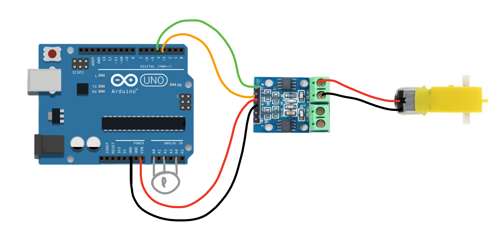
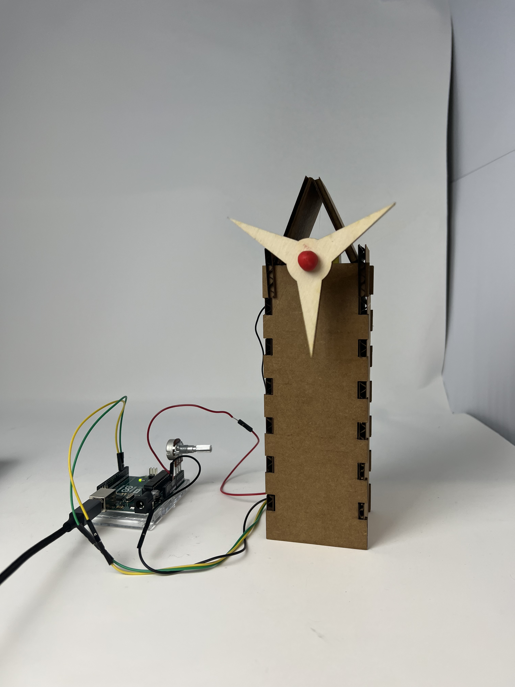

<br>
### Week 4: Microcontroller Programming
<p>This week we learned about Microcontroller Programming, specifically using the L9110 H Bridge Power Driver and a potentiometer. My assignment was simply to program an Arduino board to do something. I used the my kinetic sculpture from the last assignment and made it rotate both clockwise and counterclockwise for 5 seconds with .5 second stop in between.</p>
<strong>The Idea</strong>
<p> The first step was to sketch an idea of what the Arduino board would look like. I simply just wanted the fan to swicth rotations and only needed the Arduino board, and L9110 H Bridge Power Driver, and a potentiometer.</p>
<p>The image below was the sketch of the microcomtroller programming I planned on doing. I used the red and black wires of the motor and attached those to the L9110 on the motor A side. Then, the red and black wires continued ny making the black ground on both the L9110 and the Arduino and red from the VCC of the L9110 to the VIN of the Arduino. Then, the orange and green wires connect to the motor A-1A and A-1B parts. Finally, the potentiometer was attached to the A0, A2, AND A4 sockets.
<center></center>
<strong>The Code</strong>
<p>The first part of the code was really just setting up where each wire is and establishing the Arduino. This really just outlined the position of each wire. I was able to get and alter most of the code from the <a href="https://nathanmelenbrink.github.io/intro-dig-fab/04_arduino/index.html">website</a>. However, I did add a potentiometer to the Arduino, which refers to the second half of the setup code (A0 and A4).</p>
<br>
<div class="box">
<pre><code class="language-arduino">
void setup() {
pinMode(A1A, OUTPUT); // specify these pins as outputs
pinMode(A1B, OUTPUT);
digitalWrite(A1A, LOW); // start with the motors off
digitalWrite(A1B, LOW);
pinMode(3, OUTPUT);
pinMode(A0, OUTPUT); //This will be GND for the potentiometer
pinMode(A4, OUTPUT); //This will be 3.3V for the pot
digitalWrite(A0, LOW);
digitalWrite(A4, HIGH);
}
</code></pre> </div>
<br>
<p>The second part of the code was what I wanted the turbine/fan to do. I had the intention of making it rotate/spin both clockwise and counterclckwise. I also adjusted the times to make the turbine spin for longer (5 seconds) and stop for shorter (.5 seconds).</p>
<br>
<div class="box">
<pre><code class="language-arduino">
void loop() {
// start the motor
digitalWrite(A1A, HIGH);
digitalWrite(A1B, LOW);
delay(5000); // allow the motor to run CW for 5 seconds
// stop the motor
digitalWrite(A1A, LOW); // setting both pins LOW stops the motor
digitalWrite(A1B, LOW);
delay(0500); // keep the motor off for .5 seconds
// start the motor in opposite direction
digitalWrite(A1A, LOW); // A1A needs to be LOW to switch direction
digitalWrite(A1B, HIGH);
delay(5000); // allow the motor to run CCW for 5 seconds
// stop the motor
digitalWrite(A1A, LOW); // setting both pins LOW stops the motor
digitalWrite(A1B, LOW);
delay(0500);
</code></pre> </div>
<br>
<p>Aside from the stops and timing, I also sought to adjust and control the speed, which is why I brought in the potentiometer.</p>
<br>
<div class="box">
<pre><code class="language-arduino">
int pot_value = analogRead(A2); //pot wiper is on A2
int motor_speed = map(pot_value, 0, 1023, 255, 150); // map motor_level to pot_value so that zero corresponds to lowest speed
analogWrite(3, motor_speed);
delay(1);
}
</code></pre> </div>
<br>
<p>Overall, the <a href="turbine-mincrocontroller-code.ino 2"><strong>FINAL CODE</strong></a> ended up working, as seen in the video below.<p>
<br>
<div class="row">
<div class="column2">
<center><video width="400" height="700" controls>
<source src="turbinemicro.mp4" type="video/mp4"></video></center>
</div>
<div class="column2">
<center></center>
</div>
</div>
[Home](../index.html).